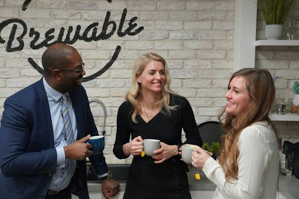

Every business needs someone conducting the people side.
Your HR function, without having to build an HR department. Orchestral gives owner-operators and growing companies embedded people practice support from executive-level advisory to hands-on execution, without the overhead cost of hiring a full-time HR team.
"Growth outpaces process. Managers are promoted faster than they're developed. The systems that worked at 15 employees quietly stop working at 80."
How We Work
Every engagement follows the same three steps, regardless of scope.
What Orchestral HR Offers
Full lifecycle HR support, delivered by a bench of vetted HR leaders and experts. View all services →
Who We Work With
Small to medium sized organizations, growing fast enough that HR can no longer live on the side of someone's desk.
- Growing headcount, or preparing for a growth phase
- One overwhelmed HR generalist, or HR handled off the side of a desk
- Recurring employee relations issues without a consistent process
- Outdated HR infrastructure: policies, documentation, performance management
- Hiring rapidly and needs recruitment support
- Leadership transition, restructuring, or M&A underway

The Founder
Valerie Khan
Founder, Orchestral HR ConsultingValerie brings over 20 years of executive HR leadership to every engagement, most recently as Vice President of HR at a national insurance brokerage network, partnering directly with company presidents on organizational effectiveness, talent strategy, and culture transformation through multiple M&A integrations. Her career spans regulated industries, complex union environments, and high-growth corporate settings at CIBC, RSA, GE, BMO, CPP Investment Board, Navacord, and the Toronto Police Service. Read her full story →
♪ Ready to tune into your people?
Valerie Khan